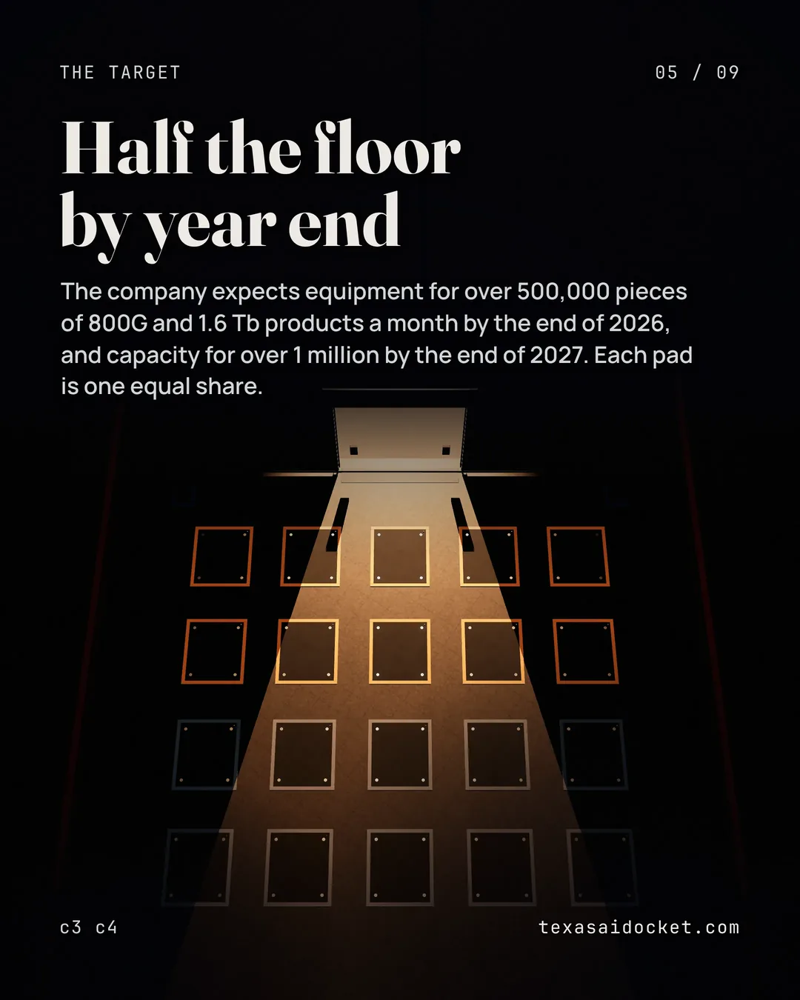

Articles · Manufacturing
Applied Optoelectronics says power is one reason its 2027 expansion will take longer
Applied Optoelectronics, a Sugar Land laser chip maker, says its 2027 expansion in the United States will take longer because getting power is taking longer than expected.
Read the story




Applied Optoelectronics told investors in its third quarter results release that its 2027 capacity expansion plan in the United States will take longer to complete. The reason its chief financial officer gave is a longer than expected time to obtain necessary electrical power, among other construction related issues.
The company makes fiber-optic networking products for four end markets, first among them internet and AI data centers. Its quarterly report says it makes its laser chips only within its Sugar Land facility, where its laser design team is located. It names three manufacturing sites, in Sugar Land, Ningbo and Taipei.
What the company expects to build
The chief financial officer says total manufacturing equipment capacity is approaching 330,000 units a month. The company now expects enough equipment installed by the end of 2026 to produce over 500,000 pieces of 800G and 1.6 Tb products a month. By the end of 2027 it expects capacity for over 1 million pieces of those transceivers a month. The first figure counts equipment across every product. The other two count only those transceivers, so the three don't form one series.
The chief executive says the company believes demand for AI-related optical technologies is accelerating. The chief executive also says the company recently secured a multi-year strategic agreement with a Tier 1 hyperscale data center customer. The release does not name the customer.
The buildings around Houston
The company leases approximately 209,665 square feet on Gillingham Lane in Sugar Land. The quarterly report says that space is used primarily for manufacturing and related operations, on a lease of 126 months. The company also owns its Kirby property in Pearland, about 388,133 square feet across two addresses. That purchase closed on April 16th, 2026.
On August 31st, 2026 the company leased two industrial buildings still to be constructed on Chimney Rock Road in Houston. They are approximately 356,186 and 737,621 rentable square feet. The quarterly report anticipates substantial completion about 16 months after the date of those leases. It also says the company will lease three other industrial buildings on McHard Road and Chimney Rock Road.
What the filings don't say
The release gives the wait for electrical power as one reason the 2027 plan will take longer. It does not say which building or site is waiting, which utility serves it, or how much longer the plan will take. The quarterly report's completion estimate for the Chimney Rock buildings is the only schedule either document prints, and neither document ties the wait for power to those buildings.
Sources for this story
- Applied Optoelectronics Reports Third Quarter 2026 Results (Form 8-K, Exhibit 99.1)
- Applied Optoelectronics, Form 10-Q for the third quarter of 2026
- Applied Optoelectronics, Form 10-Q for the third quarter of 2026, Note 18
Claim-by-claim verification · 20 claims
Applied Optoelectronics' chief financial officer says the company's 2027 capacity expansion plan in the United States will take longer to complete. The reason given is a longer than expected wait to obtain necessary electrical power, among other construction related issues.
We expect our 2027 capacity expansion plan in the US to take longer to complete due to longer than expected time to obtain necessary electrical power among other construction related issues.
The chief financial officer says the company's total manufacturing equipment capacity is approaching 330,000 units a month.
We currently have a total manufacturing equipment capacity approaching 330,000 units per month.
The chief financial officer says the company expects enough equipment installed by the end of 2026 to produce over 500,000 pieces of 800G and 1.6 Tb products a month.
we now expect by the end of 2026 that we will have sufficient manufacturing equipment installed to produce over 500,000 pieces of 800G and 1.6 Tb products per month
The chief financial officer says the company expects to grow manufacturing capacity to over 1 million pieces of 800G and 1.6 Tb transceivers a month by the end of 2027.
we expect to grow our manufacturing capacity to over 1 million pieces of 800G and 1.6 Tb transceivers per month by the end of 2027.
The chief executive says the company has made meaningful progress in scaling manufacturing for its 800G and 1.6T products. The goal is to address demand for AI-related optical technologies that the company believes is accelerating.
We have made meaningful progress in scaling our manufacturing capabilities, particularly for our 800G and 1.6T products, to address demand for AI-related optical technologies that we believe is accelerating.
The chief executive says the company recently secured a multi-year strategic agreement with a Tier 1 hyperscale data center customer.
We have recently secured a multi-year strategic agreement with a Tier 1 hyperscale datacenter customer
The quarterly report says the company's Sugar Land headquarters and manufacturing facilities primarily make lasers and laser components. They also make certain of its data center transceivers.
In the U.S., at its corporate headquarters and manufacturing facilities in Sugar Land, Texas, the Company primarily manufactures lasers and laser components as well as certain of its data center transceivers
The company leases approximately 209,665 square feet at 1111 Gillingham Lane in Sugar Land, Texas.
the Company leases approximately 209,665 square feet of space located at 1111 Gillingham Lane, Sugar Land, Texas 77478.
The quarterly report says the Gillingham Lane space is used primarily for manufacturing and related operations.
The leased premises is used by the Company primarily for manufacturing and related operations.
The company's Kirby property in Pearland, at 14621 Kirby Drive and 11555 North Spectrum Boulevard, is approximately 388,133 square feet in the aggregate.
located at 14621 Kirby Drive and 11555 North Spectrum Boulevard, Pearland, Texas, consisting of approximately 388,133 square feet in the aggregate
On August 31st, 2026 the company leased two industrial buildings still to be constructed at 17331 and 17433 Chimney Rock Road in Houston. They are approximately 356,186 and 737,621 rentable square feet respectively.
On August 31, 2026, the Company entered into two separate lease agreements with Hightower Phase II Owner, LLC ("Hightower II"), an affiliate of Hightower, for two industrial buildings to be constructed at 17331 Chimney Rock Road ("Building 4" ) and 17433 Chimney Rock Road ("Building 5" ), Houston, Texas 77053, consisting of approximately 356,186 and 737,621 rentable square feet, respectively.
The quarterly report says substantial completion of the two Chimney Rock Road buildings is anticipated approximately 16 months after the date of the leases.
Substantial completion is anticipated approximately 16 months following the date of the leases.
The tax abatement agreement between Fort Bend County and the company places the City of Sugar Land reinvestment zone it covers in Fort Bend County, Texas.
The City of Sugar Land Reinvestment Zone No. 2014-02 is an area located in Fort Bend County, Texas
The quarterly report gives the Gillingham Lane lease in Sugar Land a 126 month term commencing on March 31st, 2026.
The lease has a term of 126 months, commencing on March 31, 2026
The quarterly report says the company will lease three industrial buildings in Houston, at 6000 McHard Road, 6100 McHard Road and 17255 Chimney Rock Road.
pursuant to which the Company will lease three industrial buildings, located at 6000 McHard Road, Houston, Texas 77053 ("Building 1" ), 6100 McHard Road, Houston, Texas 77053 ("Building 2" ) and 17255 Chimney Rock Road, Houston, Texas 77053 ("Building 3" ).
The company's purchase of the Kirby property in Pearland closed on April 16th, 2026.
The acquisition closed on April 16, 2026.
The quarterly report says the company's fiber-optic networking products are primarily for four end-markets, starting with internet and AI data centers.
primarily for four networking end-markets: internet and AI data centers, cable television
The quarterly report names three manufacturing sites, Sugar Land in Texas, Ningbo in China and Taipei in Taiwan.
We have three manufacturing sites: Sugar Land, Texas, Ningbo, China and Taipei, Taiwan.
The quarterly report says the company makes its laser chips only at its Sugar Land facility, where its laser design team is located.
We manufacture our laser chips only within our Sugar Land facility, where our laser design team is located.
The quarterly report says an earlier leased building at 16851 Blue Ridge Commerce Drive in Houston was used for office, warehouse and light manufacturing and assembly.
The leased premises were used for office, warehouse and light manufacturing and assembly purposes.